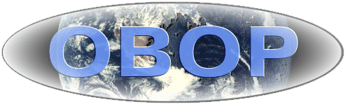
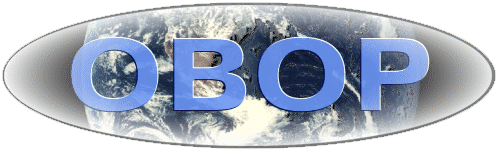
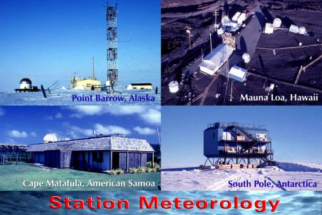

Climate Monitoring & Diagnostics Laboratory |
 Observatory Operations U.S. Dept. of Commerce / NOAA / OAR / CMDL / OBOP |
Climate Monitoring & Diagnostics Laboratory |
 Observatory Operations U.S. Dept. of Commerce / NOAA / OAR / CMDL / OBOP |
| CMDL
operates staffed atmospheric baseline observatories at Barrow, Alaska; Mauna Loa, Hawaii;
Samoa; and the South Pole from which numerous in situ and remote atmospheric and solar
measurements are conducted. The overall scientific programs and administrative functions
of the four observatories are handled from Boulder with on-site station chiefs caring for
day-to-day station activities. The meteorological data from each observatory is monitored,
processed and put on the Internet on a daily basis by the Observatory Observations
group.
|
||
|
Baseline Stations [Publications] [Point Barrow, Alaska] [Mauna Loa, Hawaii] |
|
| Observatory Operations 325 Broadway R/E/CG1 Boulder, CO 80303 Group Chief: Russ Schnell (303) 497-6733 |